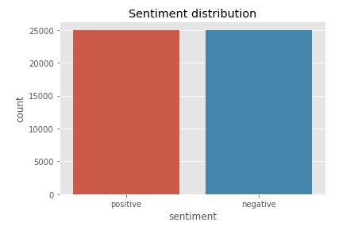
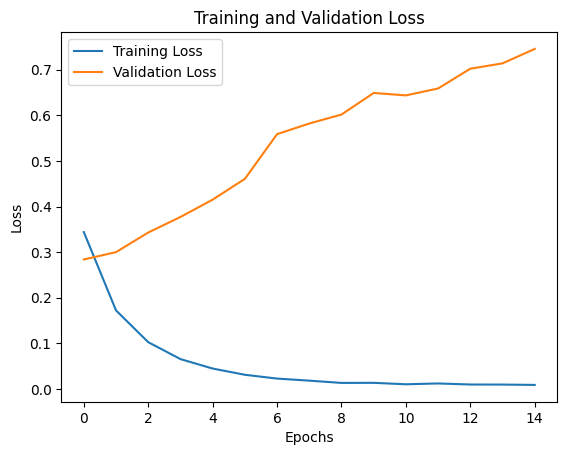
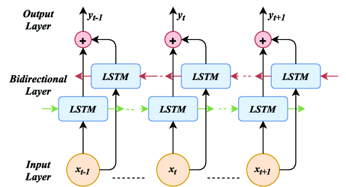
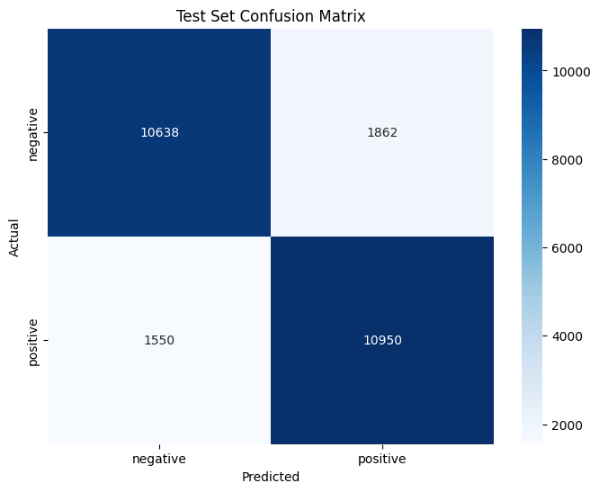
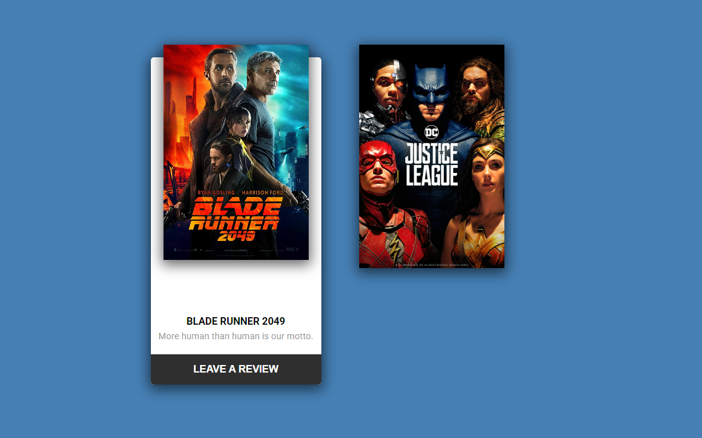
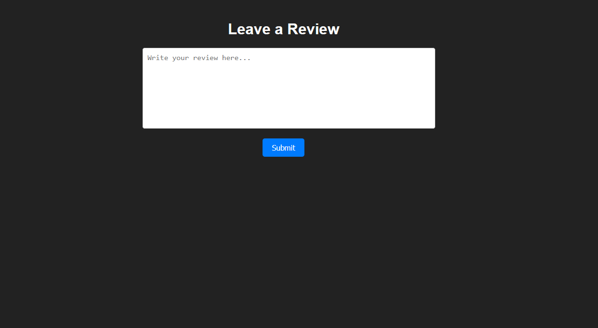
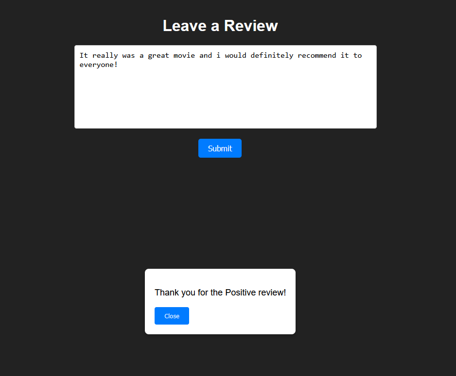
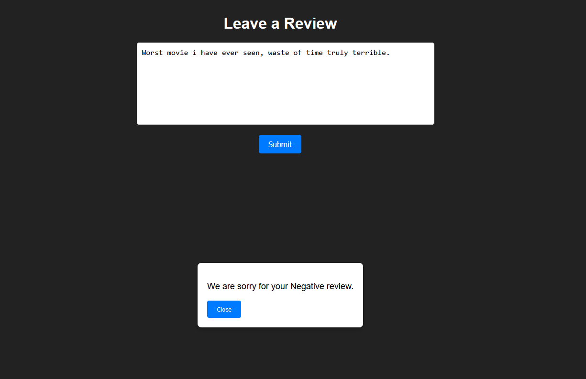

A binary sentiment classifier for IMDB movie reviews, positive or negative, comparing a classic Bag-of-Words + SVM pipeline against Bidirectional LSTM sequence models with trainable and pretrained GloVe embeddings, then wrapped in a small demo app to try it on real reviews.
Understanding the sentiment expressed in a piece of text is a core NLP problem, and movie reviews are a clean version of it: given a review, decide whether the writer liked the film or not. The interesting part isn't the label, it's the representation, turning free-form text into something a classifier can act on while keeping context, word order, and the sentiment itself intact. The system also had to be practical, not just accurate but efficient enough to train and run at a reasonable cost, since techniques like this apply directly to customer feedback analysis, opinion mining, and recommendation systems.
The project uses the IMDB Review Dataset, a standard benchmark for sentiment analysis: 50,000 movie reviews, evenly split between positive and negative, so the classes never bias training. It's organized into a 25,000-review training set and a 25,000-review test set, with a further 10% of training held out as a validation split for monitoring and hyperparameter tuning during training.

Before any model sees a review, the text is tokenized and normalized, punctuation stripped and everything lowercased with a translation table, so the vocabulary isn't split across casing and stray characters. From there, two different families of vectorization were used depending on the model:
TextVectorization layer, outputting binary vectors over a fixed vocabulary. Tried at three granularities: unigram (single words), bigram, and trigram (two and three consecutive tokens), each adding more context at the cost of a larger, sparser vocabulary.The first pass at classification used BoW vectors of increasing context, unigram, then bigram, then trigram, feeding a small dense classifier. Each step up in n-gram order captured more of the local word order that plain unigrams throw away, and accuracy did climb slightly with it (88.4% → 89.4% → 89.5%). But all three showed the same shape of problem: training loss kept falling while validation loss climbed almost immediately, a textbook overfitting signature that got harder to control as the n-gram vocabulary grew larger and sparser.

Trigram edged out the others on raw accuracy, but at a real cost: its training time was roughly 2.8× that of the unigram model for a 1.1-point accuracy gain, a trade-off that mattered once GPU time was a constrained resource.
BoW representations are order-blind past their n-gram window, so the next step was a proper sequence model. Reviews are tokenized into integer sequences and fed through an embedding layer into a Bidirectional LSTM, which reads each review both forward and backward and merges the two passes, giving the model context from both directions instead of only what came before a given word.

A dropout layer (rate 0.5) was added to fight the same overfitting problem seen in the BoW models, and the output layer is a single sigmoid neuron for the binary positive/negative decision. With trainable embeddings learned end-to-end, the model reached 86.2% test accuracy, competitive with the BoW models but still not an improvement, so a version with pretrained GloVe embeddings (frozen, non-trainable) was tried next to see whether general-purpose word semantics would help more than task-specific ones. It landed lower, at 83.4%, GloVe's general embeddings didn't carry enough IMDB-specific sentiment signal to beat embeddings learned directly on the task.
Alongside the neural approaches, a classic SVM with an RBF kernel was trained on CountVectorizer features (unigrams and bigrams, vocabulary capped at 5,000 for efficiency), with C=1 and gamma=scale. It's the simplest pipeline in the comparison, and it held its own: 86.35% test accuracy, with precision, recall, and F1 all close to that same number, meaning it wasn't just accurate on average but consistent across both classes, not skewed toward calling everything positive or negative.
Across every method tried, the BoW n-gram models came out slightly ahead on raw accuracy, with TriGram peaking at 89.5%, but the SVM baseline got within three points of that at a fraction of the architectural complexity, and the sequence models didn't manage to translate their extra context into a clear win on this dataset. All training ran on an NVIDIA A100 via Google Colab Premium.
| Method | Accuracy | Precision | Recall | F1-Score | Training time |
|---|---|---|---|---|---|
| Support Vector Machine | 86.35% | 86.37% | 86.35% | 86.35% | 469.4s |
| UniGram (BoW) | 88.4% | 87.6% | 89.5% | 88.5% | 401.2s |
| BiGram (BoW) | 89.4% | 90.9% | 87.5% | 89.2% | 773.8s |
| TriGram (BoW) | 89.5% | 89.4% | 89.6% | 89.5% | 1124.0s |
| Bidirectional LSTM (trainable) | 86.2% | 87.6% | 84.3% | 85.9% | 340.0s |
| Bidirectional LSTM (GloVe) | 83.4% | 83.4% | 83.3% | 83.4% | 294.0s |

To make the model tangible instead of a row in a metrics table, I wrapped it in a small web app: browse a handful of movies, leave a written review, and get an instant positive or negative read on it from the trained classifier.




Underneath the two-line UI it's the same pipeline as everything above: the review text is cleaned, vectorized, and passed to the trained classifier, and the result comes back before the modal even finishes animating in.